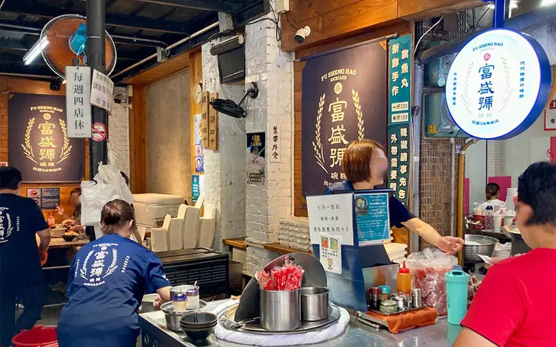
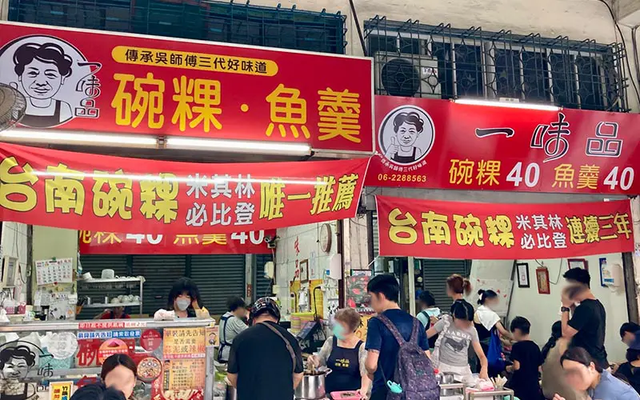
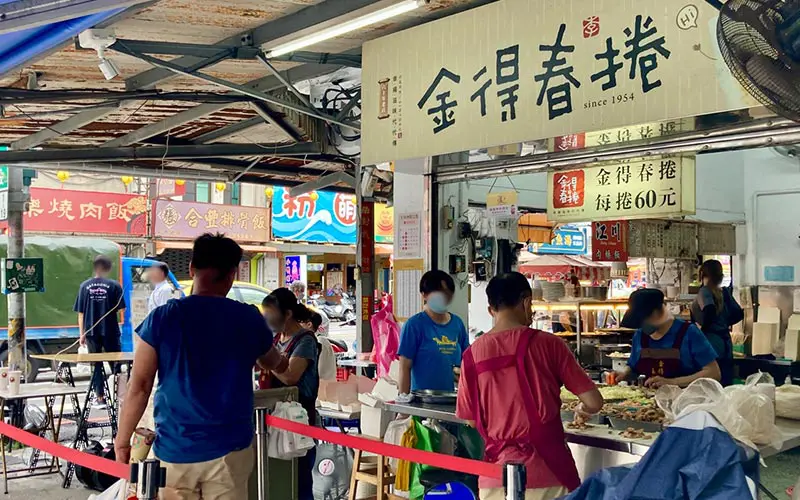
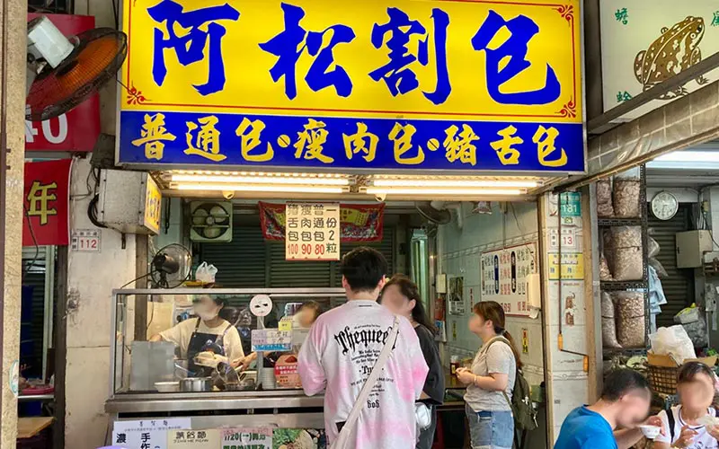

2026台南國華街必吃美食有哪些？20間在地人也愛的必吃口袋名單

來到台南要到哪裡吃美食？當然就是國華街！對於台南人來說，這些沒有花俏招牌的街頭小攤販就是生活中不可或缺的一部分，比起正襟危坐的高級餐廳，來到台南邊走邊吃更能貼近當地生活，今天就為大家整理出台南小吃最大集散地「國華街」必吃美食20選，下次來台南玩時記得不要錯過了呦！
必吃美食1：富盛號碗粿
來到國華街首先第一家就是不能錯過「富盛號碗粿」！這間70多年的老店不但是國華街的超人氣美食，更是許多來到台南的外地遊客必訪名店，店內只賣兩種餐點：碗粿跟魚羹，每樣只要台幣40元。使用台灣在來米製作而成的Q彈美味碗粿中，藏著野生火燒蝦仁、溫體瘦肉塊、肉燥、蛋黃與香菇，淋上鹹中帶甜的獨家勾芡醬汁，就是簡單幸福的台南好滋味。每天一大清早就人滿為患的店內，可以放寬心地與在地人併桌吃早餐，一口碗粿一口魚羹，看似簡單的街邊小食也能讓你吃到碗底朝天念念不忘！

富盛號碗粿
地址：台南市中西區民族路3段11號
臉書：https://www.facebook.com/profile.php?id=100063663049545
電話：06-2274101
時間：07:00～17:00／宅配每天13點前打電話訂購
公休：週四
必吃美食2：一味品碗粿
台南人再熟悉不過的街邊氛圍卻成為了三年入選必比登的人氣美食，其實「一味品碗粿」與「富盛號碗粿」師出同門，雖然口味大同小異但兩家的經營策略天南地北，「富盛號碗粿」由年輕第三代經營走文青質感氛圍，而「一味品碗粿」則是主打隨興而坐古早味，雖然兩家店隔著國華街相對面，卻各有各的支持者，形成一種良好的循環，這種不惡意競爭的人情味也讓這碗一品味碗粿連續三年入選米其林必比登推薦，全世界老饕都慕名而來！

一味品碗粿
地址：台南事中西區國華街三段177號
臉書：https://www.facebook.com/onegoodpin/
電話：06-2288563
時間：05:30～17:00／售完提早結束營業
公休：週二
必吃美食3：金得春捲
創業超過70年的「金得春捲」，點餐後工作人員熟練地將蝦子、滷豬肉、蛋皮、皇帝豆、高麗菜、滷豆乾依序堆疊在春捲皮上，紅的、綠的、黃的五顏六色引人垂涎三尺，最後撒上靈魂主角花生糖粉與蒜泥香菜，一卷滿滿餡料吃起來超有飽足感的圓胖春捲就完成囉！由於春捲備料繁複，近年來越來越多人以購買替代自己料理，也讓「金得春捲」迅速累積名聲，更成為外地遊客來到台南旅行時必吃美食！

金得春捲
地址：台南市民族路三段19號
官網：https://www.kintoku.com/
電話：06-2285397
時間：07:00~17:00
公休：週二
必吃美食4：阿松割包
雖然割包是相當道地的台灣小吃，但來到台南就是要有自己的風味，比起夾油亮五花肉的傳統割包，這家位於永樂市場邊的阿松割包，光口味就有包豬皮的「普通包」、包瘦肉的「瘦肉包」以及包豬舌的「豬舌包」三種，入味卻不乾柴的豬肉與清爽的酸菜相互提襯，尤其是豬舌包一開始真的匪夷所思，但一口吃下，完全可以理解「豬舌×酸菜×花生醬」的美味組合，有嚼勁的肉片，甜鹹調味中帶點香氣，台南式的甜味花生醬厚厚一層，酸菜的清脆則完美平衡了口感，這一口不只吃飽，還包含了台南人對傳統美食的獨到手藝！

阿松割包
地址：台南市中西區國華街三段181號
臉書：https://www.facebook.com/p/%E9%98%BF%E6%9D%BE%E5%89%B2%E5%8C%85-100069363354124/
電話：06-2110453
時間：07:30~17:00／售完提早結束營業
公休：不定休，請上臉書確認